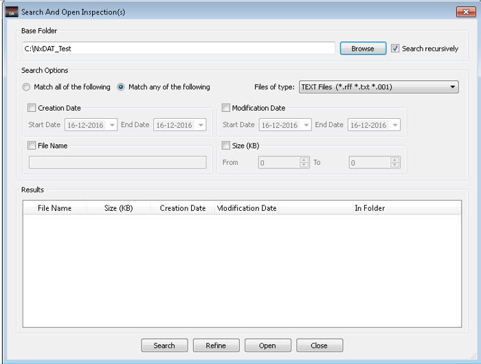
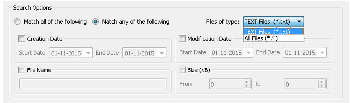
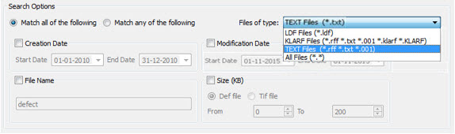

Use the Search
and Open Inspection(s) dialog box to set up parameters for your
search for inspection files.
Figure 1 shows the Search And Open Inspection(s)
dialog box. The dialog box has a base folder area, a search options
area with advanced search options, and a results area to display
the results of the search operation.
Figure 1. Search And Open Inspection(s)
Dialog Box
Procedure
- In the Calibre DefectReview
menu bar, select File > Search And
Open Inspection(s).
- Set the
base folder by clicking the Browse button.
A Select Base Folder dialog box appears.
- Select the base folder. The
search operation is performed inside the base folder.
- Select the “Search recursively”
check box.
- Figure 2 shows the Search Options of the Search
And Open Inspection(s) dialog box.
Figure 2. Search Options
To search files matching
or satisfying all the search options or criteria, select the Match all of the following option.
This type of search operation resembles an AND operation of all
the selected search options.
To search files satisfying
any of the search options or criteria, select the Match any of the following option.
This type of search operation resembles an OR operation of all the
selected search options.
To search for a specific
type of file, select the type of file to be searched from “Files
of type” list box, as shown in Figure 3. The types are configured through the dat-ini.xml file.
Figure 3. Files of Type